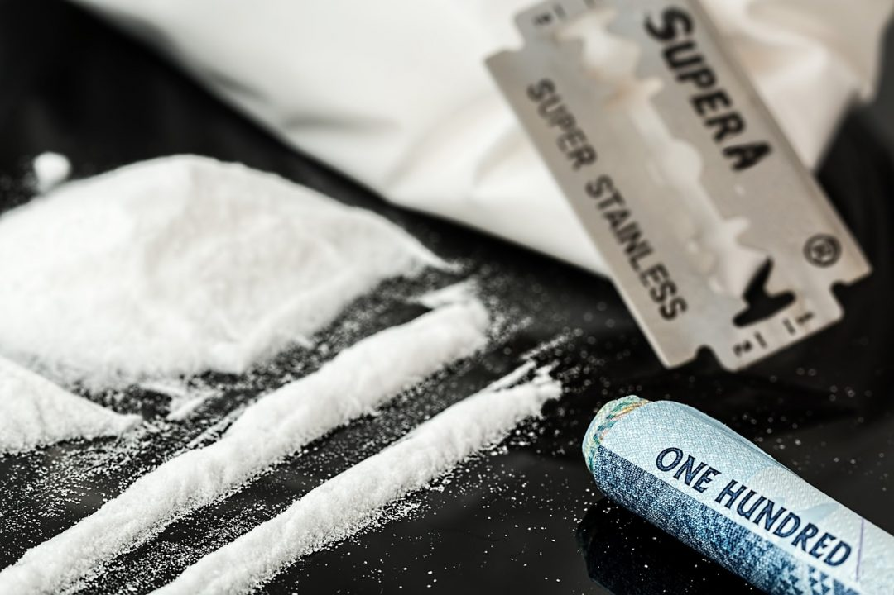

Кока.. Кока.. Кока-кола!.
Да, приятель, это однокоренные слова, и были когда-то времена, когда можно было купить баночку кокаиновой колы. Но это в прошлом, поэтому ближе к делу.
Кокаин известен даже твоему пятилетнему братишке, это спасибо америкосам, чьи фильмы пестрят белыми дорожками, там, в принципе, можно и эффект пронаблюдать подробно. Хочешь знать о нем больше? Оке.
До того, как стать белым порошком в пакетике, кокаин спокойно себе содержался в листьях куста коки. Да и на самом деле не все так просто с его формой выпуска, так сказать.
Существует четыре разновидности психостимулятора:
- Паста коки - дешёвый, первично экстрагированный кокаин, кроме основного нужного нам вещества содержит примеси (кака, короче);
- Гидрохлорид кокаина - тот самый лакшери кокаин, который нюхают крутые мужики в фильмах. Порошок, дорогой.
- Крэк - кокаин для нищебродов. И да, его курят.
- Спидбол - а вот эта штука для отъявленных. Кокаин в смеси с героином. Не хочешь, чтоб сердечко екнуло - проходи мимо.
Что по эффекту?
Перво-наперво, это эйфория. В мозге вырабатывается такая шняга, как дофамин, гормон счастья, и человек просто готов обнять весь мир. Общительность зашкаливает.
Прилив энергии обязательно. Не сидеть без дела, ходить, играть, что-то мутить! Заснуть по факту нереально.
Что касается умственной активности, вообще удивительно. Человек легче запоминает, узнает новое, быстрее учится. Но все, что ты усвоил под коксом, ты забудешь, когда отпустит. Захочешь вспомнить - легко! Прими ещё одну дозу. Выходит, вместо одного человека и одной памяти образуются как бы два человека и две памяти. Многие употребляют кокаин, вдохновляются им, творят произведения искусства. Стивен Кинг, например. Также, как и все наркотики, кокаин способствует обострению всех пяти чувств. Ну и шестое появляется.
А что, если передоз?
Тут дело тонкое, разберись в симптомах.
Если сердечко неровно простукивает - пей корвалол.
Если голова раскалывается - пей миг.
Умойся, но не суй своё ошалевшее тело в ванну целиком!
Ни в коем случае не пей чай или кофе, ну а если чуешь, что совсем пиздец - скорую вызывай, уж лучше спалиться, чем коня двинуть от инсульта.
Кстати, лучше всего кокаин именно нюхать, ведь в этом случае шанс поймать передоз значительно уменьшается.
Стоит заметить, что кокаин вызывает достаточно сильную зависимость, но слезть с него все же реально, хотя далеко не у каждого это получалось. Препаратов, которые помогли бы тебе слезть с кокаина не существует. Здесь все решает только твоя сила воли и способности психотерапевта, если ты к нему пойдешь.